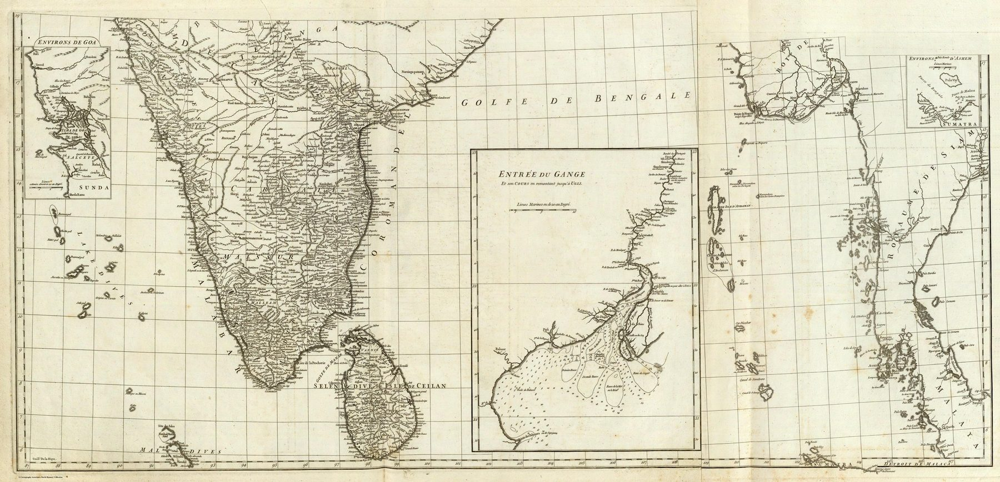

← The Great Mogul and the Companies

A component, not a second map
This object is the southern half of d’Anville’s larger Carte de l’Inde, engraved on two sheets and mounted as one in the Rumsey copy. It is best read beside the joined composite. Its value here is scale: the component sheet permits closer attention to the peninsula and to the inset plans embedded in the larger work.
Where information gathers
D’Anville’s critical method produces an uneven surface. Coastal South India is comparatively dense with towns, routes and political names because navigators, merchants, missionaries and company servants had generated repeated reports. The insets of the environs of Goa, the entrance to the Ganges and the environs of Achem (Aceh) concentrate attention on places where commerce, navigation and European strategic interest produced more exact information. Soundings in the Ganges delta make the connection between geographic scholarship and maritime use explicit.
Where evidence was thickest
The full composite is best for seeing d’Anville’s famous restraint – detail thinning into blank where evidence failed. The southern sheets show the converse: how much could be assembled where routes of observation were thickest. Accuracy pooled wherever merchants, missionaries and pilots sent reports to Paris.
The gaze
Goa, the Ganges mouth and Aceh get insets because the Compagnie des Indes cared about them. Read on its own, the southern half shows the pattern the full composite hides in its blanks: d’Anville’s precision is a map of French access, densest where the company’s ships and correspondents went. The honesty of the empty north depended on the fullness of this coast.
In the Deccan timeline
The Carnatic wars (1746–1763) · Bussy and the French at Hyderabad (1751–1758, Circars to 1766)